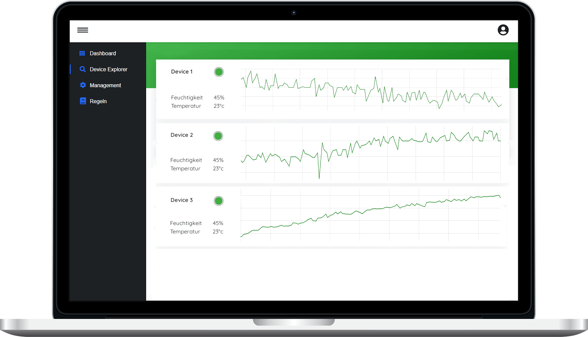

<section class="section section-bg-light-dark">
    <div class="container">
        <div class="row flex-lg-row justify-content-md-center align-items-lg-center">
            <div class="col-12 col-md-10 col-lg-5">
                <div class="section-heading section-heading--left">
                    <h2 class="__title">Device <span> Cloud</span></h2>
                    <p>
                        Die Device Cloud kümmert sich um eine schnelle und sichere Verbindung aller Produkte, Geräte und Sensoren mit der Cloud.
                        Dabei lässt sich die Device Cloud beliebig und zuverlässig bis zu mehreren Millionen von Geräten skalieren
                    </p>
                    <ul class="check-list my-md-6">
                        <li><i class="ico-checked fontello-ok"></i>Enterprise-Ready IoT Cloud</li>
                        <li><i class="ico-checked fontello-ok"></i>Sichere MQTT Verbindung</li>
                        <li><i class="ico-checked fontello-ok"></i>Zuverlässig Kommunikation</li>
                        <li><i class="ico-checked fontello-ok"></i>State-Of-The-Art Sicherheitskonzepte</li>
                    </ul>
                </div>

            </div>

            <div class="spacer py-5 d-lg-none"></div>

            <div class="col-12 col-lg-7 text-center text-lg-right">
                <figure class="image-container">
                    
                </figure>
            </div>
        </div>
    </div>
</section>
